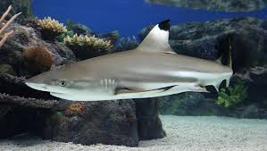

|
Common Name: Blacktip Shark Scientific Name: Carcharhinus limbatus Type: Fish Diet: Carnivore Group Name:School Average Life Span in The Wild: years Size: Up to 8 feet Weight: 66 to 220 pounds |
Blacktip sharks live in coastal waters off beaches, over coral reefs and in bays and estuaries. They are a migratory species and usually aggregate in small schools segregated by gender. On average, blacktip sharks grow to about 5.5 feet (1.7 m) long and 55 pounds (25 kg) with females growing larger than males. The largest female blacktip shark ever recorded was 6.8 feet (2.1 m) long. Blacktip sharks mate via internal fertilization and give birth to 4 to 11 pups every two years. Females leave their pups in shallow-water nurseries away from adult blacktips, most likely to help them avoid predation from other sharks and fellow blacktips that eat smaller sharks. Blacktip sharks mostly eat bony fishes, but also prey on cephalopods, stingrays, crustaceans and shrimp. They are known for chasing after discarded bycatch from fishing boats and trawl nets. Like all sharks, blacktip sharks have specialized cells in their snouts called electroreceptors that allow them to detect the electric current of nearby prey. Blacktip sharks are commonly seen by swimmers and fishers along the world’s coasts and are possibly the most abundant large species along the Gulf of Mexico coast, making them exceedingly vulnerable to accidental capture. Unlike many large marine species that fall victim to bycatch, the blacktip shark is a primary, direct target of many commercial fisheries. Blacktip sharks are fished commercially for their highly regarded meat in American, Mexican, Indian and Mediterranean markets, as well as for their fins in East Asian markets. Blacktip sharks are also fished recreationally in U.S. and Mexico waters. Although abundant, blacktip sharks are considered near threatened with extinction due to overfishing and habitat destruction. Juveniles are particularly vulnerable to habitat destruction because their inshore nurseries can be disturbed by boats and bottom trawls. Currently, there is no international management plan for blacktip sharks fishery.